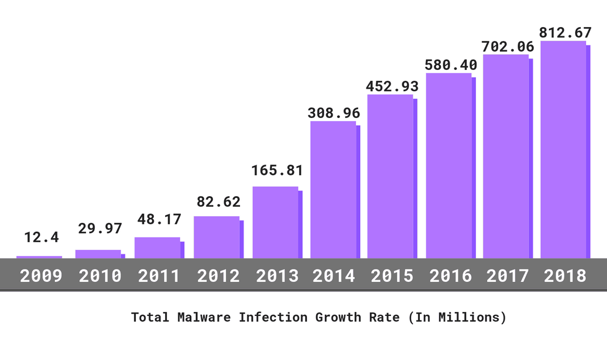

If you haven't been affected by a cyber attack in the past, it may be easy to overlook the importance
of protecting your digital information.
Just in the years between 2009 and 2018, total malware infections have increased by over 6,600%.
This is extremely alarming, due to the apparent complacency of individuals and small businesses on the matter.
In 2020, global losses from cybercrime reached nearly $1 trillion. This is nearly double on 2019’s losses, estimated to be around $500 billion. Yet, even though our societal digital dependency is only accelerating at an alarming rate within this covid-19 digital environment, the expenditure of cyber-defence costs accrued less than $41 billion in 2019, and only jumped up to around $55 billion in 2020. This is an increase of about 31% in defence expenditure, even though we see an increase of nearly 100% in total losses. This appears to be a sign of cybersecurity complacency amongst all types of businesses, as well as a sign of slow adaption to evolving threats. But it appears that small to medium business are the most at risk.
It is known that 43% of small businesses (organizations with a size of 1 – 50 employees) lack any type of cybersecurity plan whatsoever. It is also known that about 3 out of 5 small businesses do not think they are at risk of a digital attack. However, nearly 1 in 5 small businesses experience cyber attacks or data breaches. Over one quarter of cyber attacks on organizations actually target small to medium businesses, specifically because attackers are acutely aware of how complacent these types of businesses are and how few actually have adequate security in place.
No business is too large or too small for a cyber-attack. It’s time for the general population to learn more about how frequent these attacks occur and who falls victim, in order to gain better awareness of the risk involved in the greatest most invisible threat of all, ignorance and complacency.
May 24, 2021thanks to W3C for tutorial and adapted code from Style Examples
also thanks to WDN for HTML and CSS resources and any adapted code snippets from Mozilla Developer Network